Configuring Cloud Endpoint ESP to run on a local Mac
Configuring Cloud Endpoint ESP to run on a local Mac
I was trying to make Extensible Service Proxy (ESP) run on a local machine, so I could make sure I know that my gRPC setup was working before trying to deploy it on Google Cloud Platform (GCP) for real.
But I had to spend about a week on and off on this seemingly minute task, because I just could not figure out a few key components in the documentation.
This is my memo, and I hope you get to avoid getting stuck like I did.
All information are as of this writing (Mar 2018). Depending on when you read this, things may be out of date. Also I should clarify that I read the Google docs in both English and Japanese: the resources that I found were sometimes in sync, sometime not. Please conduct your own investigation with those facts in mind if something on this article seems invalid.
tl;dr
- If you want to rely on GCP LBs and such, gRPC is not an option for the clients.
- In many cases the documentation assumes the use of OpenAPI and python
- If you’re not already familiar with protobuf/gRPC, then there are some pitfalls.
- If you’re on a Mac, there are few more pitfalls.
Prerequisites
My ultimate goal was to deploy a Go gRPC service on Google Kubernetes Engine (GKE).
Go is an open source programming language that makes it easy to build simple, reliable, and efficient software.golang.org
A high-performance, open-source universal RPC framework. Client applications can directly call methods on a server…grpc.io
Google Kubernetes Engine is a powerful cluster manager and orchestration system for running your Docker containers. Set…cloud.google.com
The first few days on this project was basically spent on reading up on how to host a gRPC service on GCP. One thing I really wanted to avoid was to have to maintain a fleet of HTTP2 servers, so I really wanted to use existing solutions available on GCP.
Lose All Hope Ye Who Seek gRPC end-to-end
For most of my GKE needs I just use the regular HTTP(s) Load Balancers (LB) that are readily available. But they cannot work as a frontend for gRPC server, as these LBs convert HTTP2 requests to HTTP/1.1 and send them to the backend.
Which is fine, if we’re just doing a regular Webapp, but this being gRPC, it doesn’t quite work that way.
Upon reading up on this subject, the documentation seemed to suggest to use the Google Endpoints service, with a special purpose server called the Extensible Service Proxy (ESP).
This seems to be rooted to the fact that there is currently no way to have GCP LBs accept gRPC traffic and directly pass this payload as gRPC to the backend servers that we develop (please let me know if I’m wrong — I’d love to be wrong on this). Instead, the frontend — which is the Endpoints, accepts HTTP JSON request, which can then be turned into a gRPC request right before the backend server receives it.
Well, okay. This seems counter-intuitive, but if all we want to do is to have a uniform API with code generated from protobuf files, this is not so unreasonable. On the other hand, if you really wanted to expose gRPC to the outside world, you are going to need to manage the fleet of HTTP2 load balancers yourself.
Trying Out The “Hello World”
Now the first thing you realize when you read the documentation on using gRPC on GCP is that most of those documents weren’t really written for gRPC -- this is just my feeling but I think the documentation staff based the whole thing on their "How To Deploy an OpenAPI app" and rewrote the bits that seemed necessary.
Yes, Google Endpoints supports, and probably was initially written for, OpenAPI but those of us wanting information on gRPC deployment are sent back and forth from documents on gRPC to documents solely based on OpenAPI.
This was the one thing I needed to realize, before I understood how Endpoints and the various components worked: the documentation is OpenAPI centric. It’s Google’s decision to focus on one over the other, so that’s OK but as a reader of their documentation, you need to always remind yourself that the documentation may not have gRPC users in mind.
You will see this in the following sections in this article.
Preparing gRPC
In order to deploy gRPC to Endpoints you need two things: a .proto file that describes your service and a YAML file that configures Endpoints.
The requirement for the proto file is obvious but if you are trying to build your proto files by hand you will need to read between the lines for a few things that the documentation does not explicitly mention.
When you get to “Cloud Endpoints With gRPC”, this is what you get:
The name of your API service must be unique on GCP. Because Cloud Endpoints uses DNS-compatible names to identify…cloud.google.com
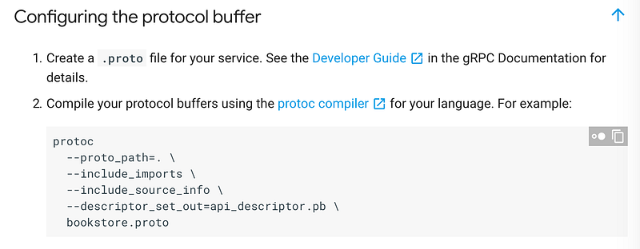
This is the right invocation of protoc. But that’s only if you have setup everything so that the Google protobuf files can be found in the correct locations!
In my case, I tried to create an rpc endpoint with a google.protobuf.Empty request, but there is no mention of this being included via google/protobuf/empty.proto . Yes, after a while you realize that you need this import, but the error messages are not exactly friendly. For first time gRPC users, this is a significant enough hump. So there: make sure you include the following statement in your .proto file:
import "google/protobuf/empty.proto"
Further along the way, you will notice that you need to use annotations. This is used to map REST-ish URLs to their gRPC equivalent, but more on that later.
The document looks something like this:
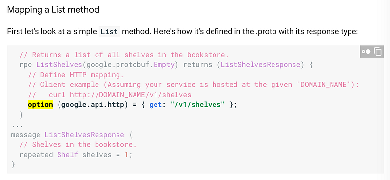
That “option” bit is an annotation, and it doesn’t come with protoc by default. You need to import another library to make this work.
Well, you figure, just like the previous google.protobuf.Empty example, the truth should lie in the source code. So you navigate to Github:
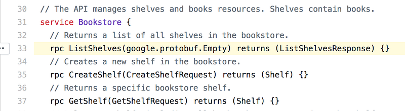
Oh… OK. Well, again, if you are an experienced gRPC developer, you can probably figure this out, but if you’re new to this, this would be pretty frustrating.
The answer here is to clone https://github.com/googleapis/googleapis repository, and point protoc to look under wherever you cloned it to. In my case, here:
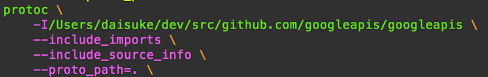
Then you import this:
import "google/api/annotations.proto";
And now you can specify the annotations like the documentation asks you to.
Running ESP
To be honest, ESP is a rather cool piece of technology. Based on information registered to the Endpoints, it can perform:
- Authentication
- Authorization
- Routing
- Conversion between JSON / gRPC payload
Currently this software is used by Endpoints so that they can put any application behind Endpoints without having to provide bindings. See, while some languages are easier to hook, some languages, notably Go, doesn’t quite fit. This is a guess, but judging from how the github.com/GoogleCloudPlatform/go-endpoints has been, um, unloved, I don’t think I’m too far off from the truth.
ESP basically allows for anything that can support OpenAPI/gRPC to sit behind it, and it can handle all of the stuff that you would normally need to do with the actual Endpoints API.
ESP is distributed as a Docker image, so it’s easy to run… well, that’s unless you hit one of the corner cases that the documentation does not mention.
Dear Mac Users: Read The Fine Print
If you happen to land on this documentation page, you will have to be careful.
The Endpoints Getting Started sample is available in other languages. See the Samples page for the GitHub location of…cloud.google.com
Here you will find how to run the ESP docker container:
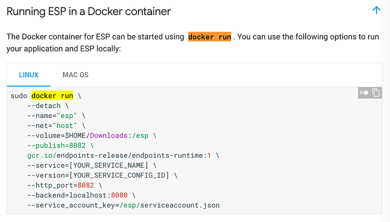
I know Docker. The options all seem legit. But if you run this on a Mac, this is not going work. The container will start, but you will not be able to reach it.
That’s because the for the network configuration. Docker for Mac is a little peculiar in this sense. Read their documentation for details:
Docker for Mac provides several networking features to make it easier to use. Features VPN Passthrough Docker for Mac's…docs.docker.com
But the real problem is that this particular piece of documentation does not mention this fact at all, until you scroll down to the list of options that you can specify:
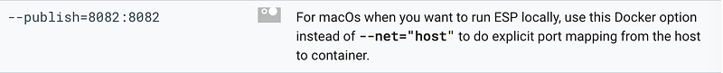
Yes, this all makes sense. There’s even a special “Mac OS” tab, but really. If “easy adoption” was one of your missions, this is not the right way. One mention such as “This command is for Linux only” in red text would have done wonders. BTW you will also notice that the --backend parameter is different for Mac. Don’t forget this.
Bottom line: Be careful copy and pasting! That command may not be for you!
gRPC Users: Use Your Imagination
You deployed or Endpoints, your ESP is running, you also started your backend gRPC server. When you send a request to the ESP, you should have it proxying to your backend server.
And yes, you do see something getting through! But you are not getting a response back… It’s stuck….
Well, you know how to debug Go HTTP2 problems: Use GODEBUG=http2debug=1 . Then you see this:
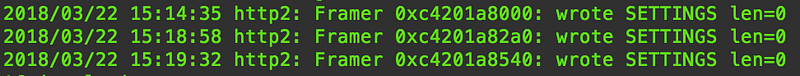
What…? The client (ESP) is not acking…?
So then you go back to the documentation. You look for what you did wrong. Was it in the options table? Something I said or done?
Now, the only reason I found this was because of a whim: I decided to read what the actual ESP binary would tell me if I asked for its options:
docker run --rm \
gcr.io/endpoints-release/endpoints-runtime:1.0 \
--help
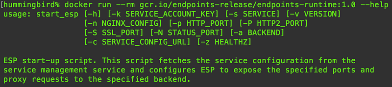
Scroll down…
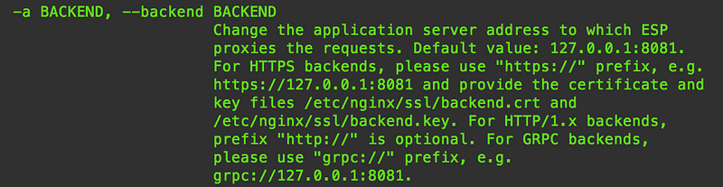
Hmm?!
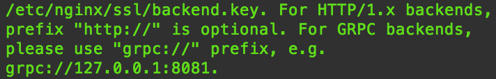
For GRPC backends, please use “grpc://” prefix, e.g. grpc://127.0.0.1:8081
After finding this, I immediately went back to the previously mentioned documentation, and looked for the word grpc:// : no hits.
I looked at the top of the page again. This is a documentation page for gRPC on Endpoints:
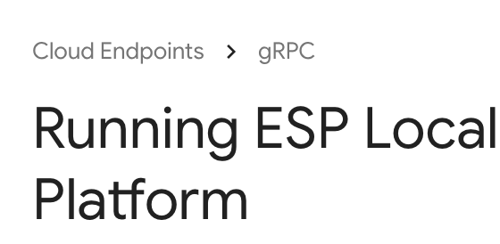
And yet, it has no mention of the small, but important grpc:// prefix. I want my 3 hours of work back, please.
So yes, do specify the backend server in the form of grpc://host:port then everything will work.
Conclusions
Endpoints and ESP are fantastic. It automates a lot, and if you read into the docs, you realize that they have designed this so it’s easy to do Blue/Green deployment, and rollbacks when necessary. At the same time the pieces of software are rich in feature, enough that it will probably allow you to NOT write much boilerplate code.
But you must be careful with their docs, especially if you are not 100% on their agenda of running OpenAPI based python apps.
Hope this helps other poor souls trying to use gRPC and Go with Endpoints like me. Happy hacking!